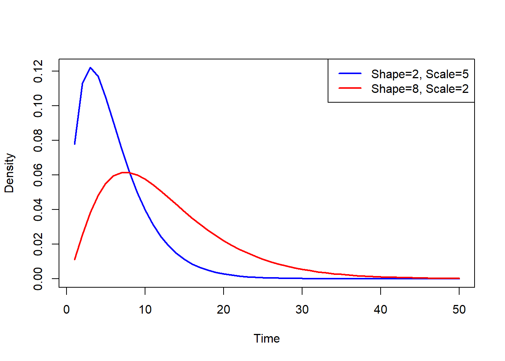
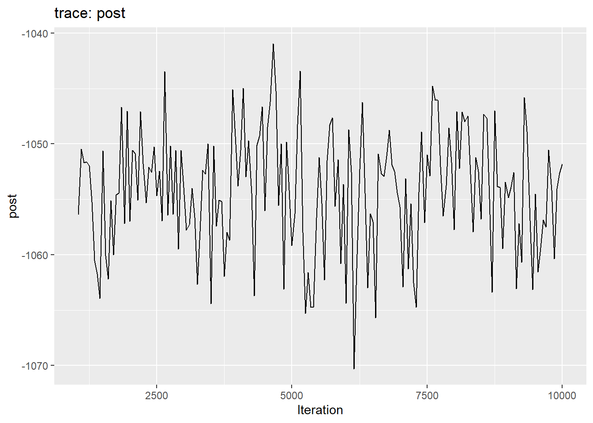
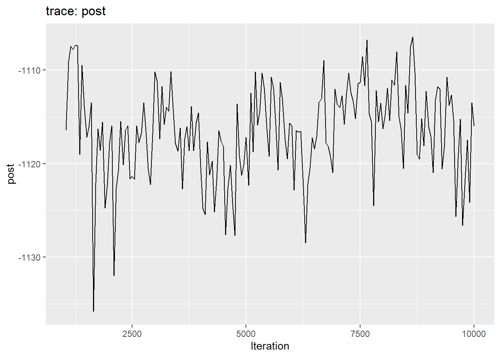

pacman::p_load(outbreaker2, ape, igraph, vegan, distcrete, ggplot2, scales)
pacman::p_load_gh("CyGei/o2ools")
devtools::load_all()Compare posterior sets of transmission trees
Load libraries & scripts
outbreaker2 chains
We are using the default outbreaker2 data from the vignette. But will distinguish the two chains by using different generation time distributions (gt).
linelist <- data.frame(
ids = as.character(1:30),
dates = outbreaker2::fake_outbreak$sample
)
# Define two distinct gamma distributions
gt <- lapply(list(
distcrete("gamma", interval = 1, shape = 2, scale = 3, w = 0.5),
distcrete("gamma", interval = 1, shape = 2.5, scale = 5, w = 0.5)
), function(d) d$d(1:50))
# Plot the two gamma distributions
plot(1:50, gt[[1]],
type = "l", col = "blue", lwd = 2,
xlab = "Time", ylab = "Density"
)
lines(1:50, gt[[2]], col = "red", lwd = 2)
legend("topright",
legend = c("Shape=2, Scale=5", "Shape=8, Scale=2"),
col = c("blue", "red"), lwd = 2
)
And run multiple (n_chains) instances of outbreaker2, with different generation time distributions. The below will result in n distinct posterior chains of transmission trees.
n_chains <- 2
set.seed(1)
chains <-
lapply(1:n_chains, function(i) {
x <- outbreaker2::outbreaker(
data = outbreaker2::outbreaker_data(
dna = outbreaker2::fake_outbreak$dna,
dates = outbreaker2::fake_outbreak$sample,
ctd = outbreaker2::fake_outbreak$ctd,
w_dens = gt[[i]],
ids = linelist$ids
),
config = outbreaker2::create_config(
init_pi = 1,
move_pi = FALSE,
find_import = FALSE
)
)
x <- x[x$step > 1000, ] # burnin
})Trace plots of the posterior for each chain
plot(chains[[1]])
plot(chains[[2]])
Posterior transmission trees
For each chain, we use the package o2ools to convert the default outbreaker2 dataframe into a list of transmission trees.
trees <- lapply(chains, function(chain) {
t <- o2ools::get_trees(out = chain, ids = linelist$ids, kappa = FALSE)
t <- lapply(t, function(df) df[-1, ]) # remove introduction
return(t)
})
cat(
length(trees[[1]]), "trees in chain #1 | ", length(trees[[2]]), "trees in chain #2", "\n"
)180 trees in chain #1 | 180 trees in chain #2 Statistical test
Chi-square test
We can compare the posterior frequencies of infector-infectee pairs between chains uing a chi-square test. The null hypothesis (p > 0.05) states that the frequencies of infector-infectee pairs are drawn from the same distribution.
get_chisq(..., method = c("chisq", "fisher"), test_args = list())# compare the two outbreaker2 runs
get_chisq(trees[[1]], trees[[2]])
Pearson's Chi-squared test
data: count data
X-squared = 1230.7, df = 64, p-value < 2.2e-16get_chisq(trees[[1]], trees[[2]],
method = "chisq",
test_args = list(simulate.p.value = TRUE,
B = 1000))
Pearson's Chi-squared test with simulated p-value (based on 1000
replicates)
data: count data
X-squared = 1230.7, df = NA, p-value = 0.000999# bootstrap in the same chain
get_chisq(sample(trees[[1]], 1000, replace = TRUE),
sample(trees[[1]], 1000, replace = TRUE))
Pearson's Chi-squared test
data: count data
X-squared = 22.794, df = 52, p-value = 0.9999PERMANOVA
Computes the distance between nodes in the transmission tree and then compare the variance within chain and the variance between chains.
compare_trees is the main function used to compare two posterior sets of transmission trees.
compare_trees(..., f_tree = patristic, f_chain = euclidean, adonis2_args = list())
compare_trees(trees[[1]], trees[[2]], adonis2_args = list(permutations = 2000))...: Lists of data frames representing transmission trees. Each data frame contains afromandtocolumn with entries representing case IDs present in the linelist.f_tree: function to compute the distance between nodes within a tree. Must return a square matrix.f_chain: function to compute the distance between two trees. Must return a square matrix.adonis2_args: list containing additional arguments forvegan::adonis2().
# same chain
compare_chains(sample(trees[[1]], size = 100, replace = TRUE),
sample(trees[[1]], size = 100, replace = TRUE))Permutation test for adonis under reduced model
Permutation: free
Number of permutations: 999
(function (formula, data, permutations = 999, method = "bray", sqrt.dist = FALSE, add = FALSE, by = NULL, parallel = getOption("mc.cores"), na.action = na.fail, strata = NULL, ...)
Df SumOfSqs R2 F Pr(>F)
Model 1 1921 0.00647 1.2894 0.228
Residual 198 295040 0.99353
Total 199 296961 1.00000 # different chains
compare_chains(trees[[1]], trees[[2]])Permutation test for adonis under reduced model
Permutation: free
Number of permutations: 999
(function (formula, data, permutations = 999, method = "bray", sqrt.dist = FALSE, add = FALSE, by = NULL, parallel = getOption("mc.cores"), na.action = na.fail, strata = NULL, ...)
Df SumOfSqs R2 F Pr(>F)
Model 1 48064 0.08697 34.1 0.001 ***
Residual 358 504603 0.91303
Total 359 552667 1.00000
---
Signif. codes: 0 '***' 0.001 '**' 0.01 '*' 0.05 '.' 0.1 ' ' 1Note the paper from Anderson states that there is a dispersion (variance within group) effect. Even when the location (i.e. the centroid of the group) is the same between two groups, greater dispersion in one group may yield significant differences. We could test this by running 2 iterations of outbreaker2 one with priors with high uncertainty and one with low uncertainty @Thibaut ?
Using alternative distance functions
See Kendall’s paper and vignette from treespace.
mrciDepth <- function(tree) {
treespace::findMRCIs(as.matrix(tree))$mrciDepths
}
compare_chains(trees[[1]], trees[[2]], f_tree = mrciDepth)Permutation test for adonis under reduced model
Permutation: free
Number of permutations: 999
(function (formula, data, permutations = 999, method = "bray", sqrt.dist = FALSE, add = FALSE, by = NULL, parallel = getOption("mc.cores"), na.action = na.fail, strata = NULL, ...)
Df SumOfSqs R2 F Pr(>F)
Model 1 1881.3 0.15956 67.968 0.001 ***
Residual 358 9909.0 0.84044
Total 359 11790.2 1.00000
---
Signif. codes: 0 '***' 0.001 '**' 0.01 '*' 0.05 '.' 0.1 ' ' 1